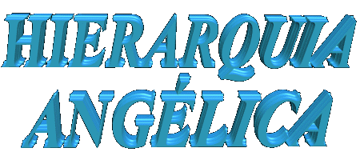
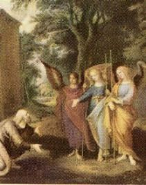
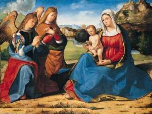
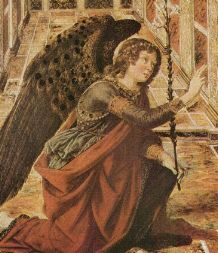
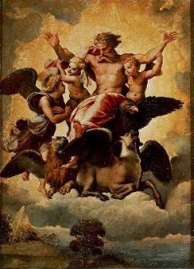
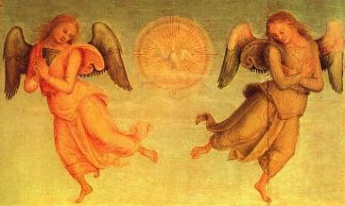
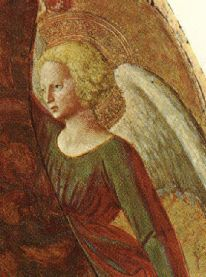
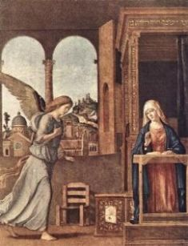
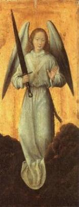
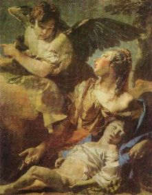

O nome "seraph"
em hebraico, significa "queimar completamente"
. Segundo o conceito hebraico, o Serafim não é apenas um ser
que "queima", mas "que se consome
" no amor ao Sumo Bem,
que é o nosso DEUS Altíssimo.
O nome "seraph"
em hebraico, significa "queimar completamente"
. Segundo o conceito hebraico, o Serafim não é apenas um ser
que "queima", mas "que se consome
" no amor ao Sumo Bem,
que é o nosso DEUS Altíssimo.

Seguindo o critério
tradicional, são nove (9) os Coros ou Ordens Angélicas: 
Este número de Ordens foi fixado em função dos ensinamentos contidos nas Cartas de São Paulo Apóstolo aos Efésios e aos Colossenses que mencionam 5 Ordens, mais duas Ordens enumeradas no Antigo Testamento (Querubins e Serafim), e finalmente outras duas Ordens muito citadas no Novo Testamento (Arcanjos e Anjos).
Os Coros distinguem-se entre si pelo grau de santidade e beatitude, pela missão e também pela espécie, de tal modo que os de grau mais elevado dominam sobre os inferiores, e juntos, dominam sobre a criação. Portanto, há diferenças entre as Três Hierarquias. Todavia, faz-se mister destacar, que todas as Classes Angélicas vivem em completa e perfeita harmonia, entendendo-se amorosamente junto ao CRIADOR.
PRIMEIRA HIERARQUIA:
É formada pelos Anjos que estão em íntimo contato com o CRIADOR, é como se fossem os guardiões do palácio Divino. Eles possuem mais Conhecimentos e Visão dos fatos em relação às demais Hierarquias, é por assim dizer o reflexo do SENHOR. Dedicam-se a Amar, Adorar e Glorificar a DEUS numa constante e permanente frequência, em grau bem mais elevado que os outros Coros.
Esta Hierarquia abraça três Ordens ou Coros Angélicos: Serafim, Querubins e Tronos.
SERAFINS
São considerados os Anjos mais honrados e mais dignos, os que mais amam, ou seja, aqueles que possuem uma maior e mais admirável capacidade de amar.
O nome "seraph"
em hebraico, significa "queimar completamente"
. Segundo o conceito hebraico, o Serafim não é apenas um ser
que "queima", mas "que se consome
" no amor ao Sumo Bem,
que é o nosso DEUS Altíssimo.
Na Sagrada Escritura os Anjos Serafim aparecem somente uma única vez, na visão de Isaias:
"... vi o SENHOR sentado sobre um trono alto e elevado... Acima DELE, em pé, estavam Serafim, cada um com seis asas: com duas cobriam a face, com duas cobriam os pés e com duas voavam".(Is 6,1-2)
Com duas asas cobriam o rosto, em sinal de profundo respeito, para não ver a Face do CRIADOR; com outras duas cobriam os pés para se ocultarem, para não serem vistos, conscientes de que ali estão pela infinita misericórdia do CRIADOR, e não pelo próprio merecimento; e com as outras duas asas voavam, como a indicar uma pronta e amorosa disponibilidade, em condições de atender um gesto ou aceno Divino, convocando-os para uma missão. Por essa razão, Dionísio em sua "Hierarquia Celeste", denomina os Serafim como aqueles Anjos que tem muitas asas.
QUERUBINS:
O nome Querubim indica uma Classe
de Anjos com grande força de 
Na Sagrada Escritura o nome dos Anjos Querubins é o mais citado, aparecendo cerca de 80 vezes nos diversos livros.
Os Querubins são também os seres misteriosos que Ezequiel descreve na visão que teve, no momento de sua vocação:
"O seu corpo todo, o dorso, as mãos, as asas, bem como as rodas, estavam cheias de olhos em torno". (Ez 10,12)
Quando Moisés recebeu as prescrições para a construção da Arca da Aliança, onde o SENHOR habitou, o trono Divino foi colocado entre dois Querubins:
"Faze-me um santuário, para que eu possa habitar no meio deles. Farás tudo conforme o modelo da Habitação e o modelo da sua mobília que irei te mostrar. Farás uma arca de madeira de acácia... Farás dois Querubins de ouro... formando um só corpo com o propiciatório, nas duas extremidades".(Ex 25,8-9.18-19)
Estas considerações atestam que os Querubins são conhecedores dos Mistérios Divinos. São cheios de olhos, ou seja, eles estão cheios de Sabedoria. Contemplam com igual clareza e profundidade a Face do Altíssimo, absorve os raios maravilhosos da Divina Luz e louvam ardorosamente o CRIADOR, transmitindo a Beleza e o Conhecimento de DEUS as outras Ordens que estão abaixo.
TRONOS:

Os Anjos que compõe este Coro da Hierarquia Angélica, são o reflexo da Grandeza de DEUS, e por isso mesmo, participam da solidez e segurança do poder do ETERNO PAI. Acolhem em si a Grandeza do CRIADOR e a transmitem aos Anjos de graus inferiores. São chamados “Sedes Dei" (Sede de DEUS).Em síntese, os Tronos são aqueles Anjos que apresentam aos Coros inferiores, o esplendor da Divina Onipotência.
SEGUNDA HIERARQUIA
São os Anjos que dirigem os Planos da Eterna Sabedoria, comunicando aqueles projetos aos Anjos da Terceira Hierarquia, que vigiam o comportamento da humanidade. Eles são responsáveis pelos acontecimentos no Universo. Esta Hierarquia é formada pelos seguintes Coros de Anjos: Dominações, Potestades e Virtudes.
DOMINAÇÕES
São aqueles da alta nobreza
celeste. Para caracteriza-los com ênfase, São Gregório escreveu: "Algumas fileiras do exército angélico
chamam-se Dominações, porque os restantes lhe são submissos, ou seja, lhe são
obedientes". 
Embora não pertençam ao Coro da guarda palaciana, como os três Coros mais altos, contudo estão muito próximo deles e forma com os mesmos os quatro Coros do Trono. São enviados por DEUS a missões mais relevantes e também, estão incluídos entre os Anjos que exercem a "função de Ministro de DEUS".
Na verdade, eles dominam sobre todas as demais Ordens Angélicas encarregadas de executar a Vontade do CRIADOR.
Para se compreender a grandeza das funções deste Coro de Anjos, São Tomás de Aquino escreveu na Suma Teológica: "O domínio ou senhorio das Dominações é, por conseguinte, participação na verdadeira dominação de DEUS. O CRIADOR domina sobre o mundo, através das Dominações Angélicas, que LHE são submissas".
POTESTADES
É o Coro Angélico formado pelos Anjos que transmitem aquilo que deve ser feito, cuidando de modo especial da "forma" ou da "maneira" como devem ser feitas as coisas. Também são os Condutores da ordem sagrada. Pelo fato de transmitirem o poder que recebem de DEUS, são espíritos de alta concentração, alcançando um grau elevado de contemplação ao CRIADOR.
VIRTUDES

As atribuições dos Anjos deste Coro são semelhantes aquelas dos Anjos do Coro Potestades, porque também eles transmitem aquilo que deve ser feito pelos outros Anjos, mas sobretudo, auxiliam no sentido de que as coisas sejam realizadas de modo perfeito. Assim, eles também têm a missão de remover os obstáculos que querem interferir no perfeito cumprimento das ordens do CRIADOR. São Tomás de Aquino lhes atribui ainda a missão de proteger a parte física das pessoas, do mesmo modo como ele atribui as Dominações, o poder de presidir à natureza celeste. São considerados Anjos fortes e viris. Quem sofre de fraquezas físicas ou espirituais, deve invocar por meio de orações, o auxílio e a proteção de um Anjo do Coro das Virtudes.TERCEIRA HIERARQUIA
É formada pelos Anjos que executam as ordens do Altíssimo. Eles estão mais próximos da humanidade, ou seja, de cada um de nós e conhecem a fundo a natureza das pessoa que devem assistir, a fim de poderem cumprir com exatidão a Vontade de DEUS: insinuando, avisando ou castigando, conforme o caso. Esta Hierarquia é formada pelos: Principados, Arcanjos e Anjos.
PRINCIPADOS
Os Anjos deste Coro são
guias dos mensageiros Divinos. Não são enviados 
No livro de Daniel são também apresentados como protetores de povos:
"O Príncipe do reino da Pérsia me resistiu durante vinte e um dias, mas Miguel, um dos primeiros Príncipes, veio em meu auxílio". (Dn 10,13)
Significa dizer, que são aqueles Anjos que levam as instruções e os avisos Divinos ao conhecimento dos povos que lhe são confiados.
Porém, quando esses mesmos povos recusam aceitar as mensagens do SENHOR, os Principados transformam-se em Anjos Vingadores, e derramam as taças da ira Divina sobre eles, de forma a reconduzi-los através do castigo e da dor, de volta ao DEUS de Amor e Misericórdia que eles abandonaram propositalmente.
ARCANJOS
A ordem
tradicional dos Coros Angélicos coloca os
"Arcanjos" entre os "Principados" e os "Anjos". Contudo, na
Sagrada Escritura, não aparecem como um grupo particular e definido. Por exemplo,
Miguel e Gabriel são chamados de Arcanjos em diversas citações: no capitulo 4 da
primeira carta de São Paulo aos Tessalonicenses, no capítulo 4 do Livro de Daniel,
no versículo 9 da Carta de São Judas, mas para indicar que são 
Por outro lado, também Rafael é denominado pela Igreja como um Arcanjo.
A respeito de
Rafael, no Livro de Tobias, ele mesmo confirma que está diante de DEUS:
"Eu sou Rafael, um dos sete Anjos que estão sempre presentes e tem acesso junto à Glória do SENHOR".

Tendo em vista estas considerações, compreende-se que verdadeiramente a revelação Divina ainda não deixou ao alcance da percepção humana, um conhecimento mais claro e profundo sobre as atividades dos Anjos do Coro dos Arcanjos, porque as citações que se encontram no Antigo e Novo Testamento envolvendo os nomes dos Arcanjos Miguel, Gabriel e Rafael, com certeza não devem se referir a Anjos que estão colocados no penúltimo lugar na Hierarquia Angélica, em face da grandeza e importância dos trabalhos que realizaram. Assim sendo, temos duas alternativas: dizer que aqueles mencionados Anjos, mesmo denominados de Arcanjos, não pertencem ao "Coro dos Arcanjos" e sim a um Coro bem mais elevado, ou afirmar que São Miguel, São Gabriel e São Rafael pertencem realmente ao "Coro dos Arcanjos”, e que eles são grandes e importantes no Céu apesar de pertencerem a um Coro tão simples e humilde na Escala Angélica, porque são absolutamente modestos e fieis, isto sem ter a intenção de afirmar que os demais Anjos não sejam também simples, humildes, modestos e fieis. DEUS é quem faz o juízo perfeito e para ELE estas são as virtudes mais importantes. Na Sagrada Escritura, temos as palavras de JESUS:"... os Discípulos aproximaram-se de JESUS e lhe perguntaram: Quem é o maior no Reino dos Céus? ELE chamou perto de si uma criança, colocou-a no meio deles e disse: Em verdade vos digo que, se não mudardes e não vos tornardes como as crianças, de modo algum entrareis no Reino dos Céus. Aquele, portanto, que se tornar pequenino como esta criança, esse é o maior no Reino dos Céus".(Mt 18,1-4)
Anualmente no
dia 29 de Setembro a Igreja celebra a festa dos três mencionados Arcanjos.
Arcanjos.
ANJOS
Os Santos Anjos recebem as ordens dos Coros superiores e as executam.
No reino dos espíritos são os últimos da Hierarquia, como se fossem humildes ervas escondidas entre as flores perfumadas e viçosas num magnífico jardim. Para eles, são reservadas a execução dos serviços mais simples, mas que também são necessários e insubstituíveis, como por exemplo: acompanhar um jovem que se encontra em perigo; dominar e tranquilizar o interior rebelde das pessoas; assistir e consolar um moribundo; evitar que ocorram acidentes, e muitas outras providências, sobretudo, o Anjo da Guarda, que acompanha cada pessoa do nascer ao morrer, é aquele a quem primeiro encontraremos após a morte. Ele conhecendo integralmente a nossa existência é que ordenará a nossa alma as primeiras providências: enviando-a ao Purgatório, acompanhando-a diretamente ao Céu, ou abandonando-a em queda livre ao inferno, de acordo com o merecimento de cada um.
Outro aspecto que não pode ser esquecido, é o fato de que os Anjos, guardadas as devidas proporções, estão mais perto da humanidade e por assim dizer, convivendo conosco prestando um serviço silencioso mas de valor incomensurável à cada pessoa. O CRIADOR inspirou o escritor sagrado a escrever no Livro Êxodo, da Bíblia os versículos a seguir:
"Eis que envio um Anjo diante de ti, para que te guarde pelo caminho e te conduza ao lugar que tenho preparado para ti. Respeita a sua presença e observa a sua voz, e não

lhe sejas rebelde, porque não perdoará a vossa transgressão, pois nele está o Meu Nome. Mas se escutares fielmente a sua voz e fizeres o que te disser, então serei inimigo dos teus inimigos e adversário dos teus adversários". (Ex 23,20-22)
Sabendo que os Anjos são enviados de DEUS, devemos respeitar e honrar todos eles, inclusive os mais simples e modestos, porque eles tem acesso direto ao CRIADOR. A palavra de JESUS é ensinamento para a nossa vida:
"Não desprezeis nenhum desses pequeninos (crianças, pessoas de pouca instrução, pobres, velhos, etc), porque EU vos digo que os seus Anjos (seus Anjos da Guarda) nos Céus vêem continuamente a Face de Meu PAI que está nos Céus". (Mt 18,10)